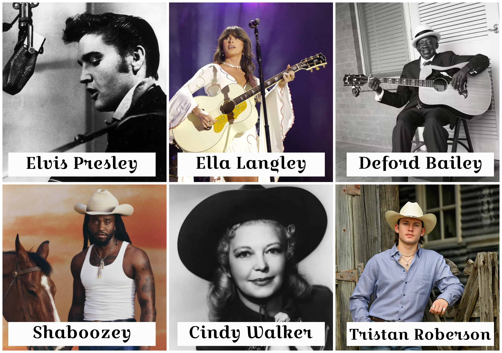
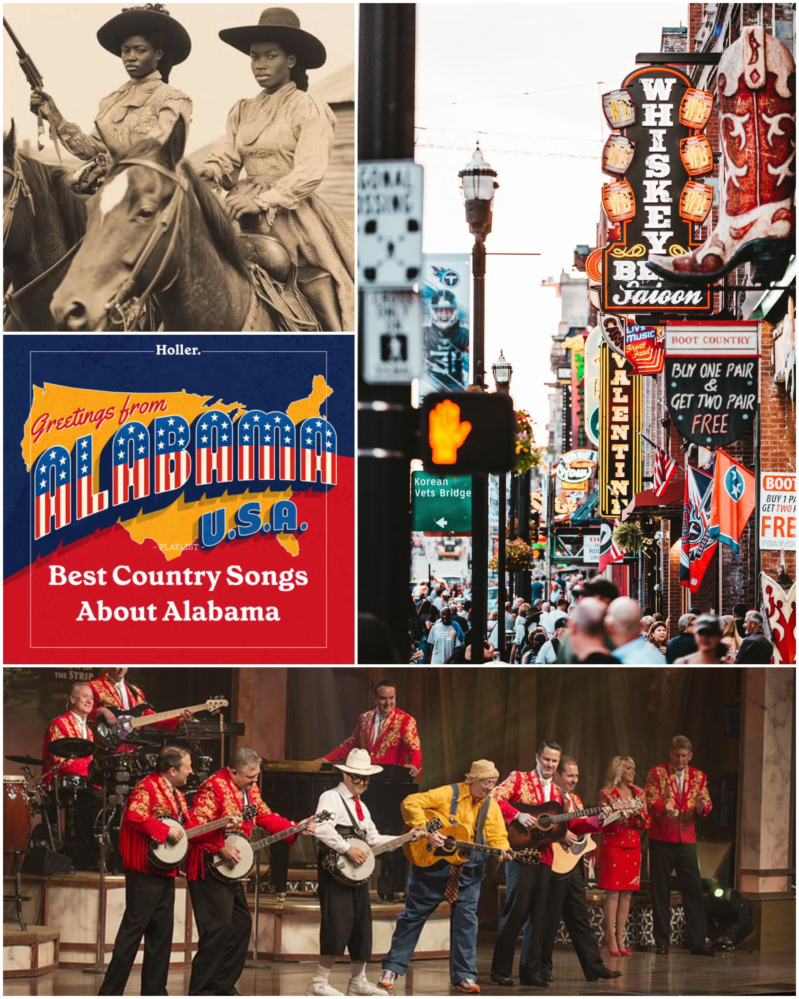
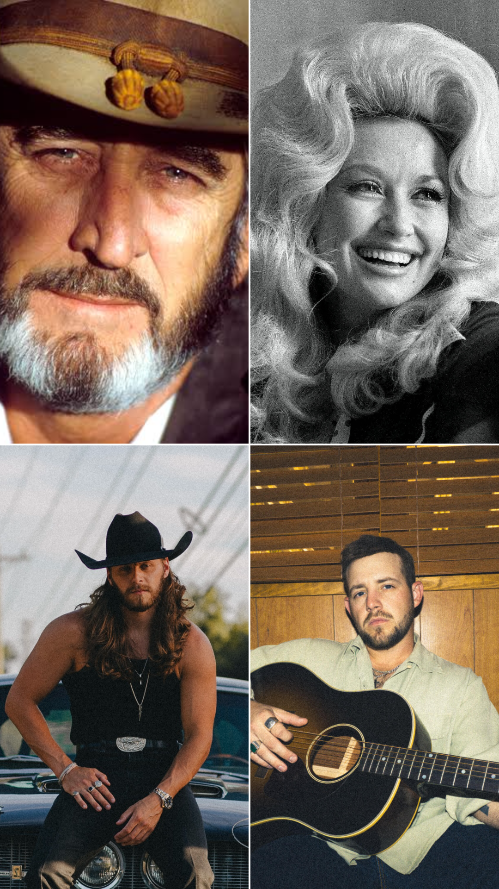

class: center, middle # Country Music ### Inspiratie voor mijn digital garden --- # Introtekst Countrymuziek is ontstaan in de Verenigde Staten en combineert invloeden van onder andere folk, blues en gospel. <p></p> --- # Inhoud 1. Mijn onderwerp 2. Oorsprong 3. Invloeden 4. Ontwikkeling 5. Bluegrass 6. Artiesten 7. Country vandaag 8. Bronnen 9. Afbeeldingen <p></p> --- class: slide-four # Mijn onderwerp ### Waarom country? Ik ben geboren en opgegeroeid in **Houston, Texas**, waar countrymuziek een groot onderdeel is van de muziek- en cultuurwereld. Je komt het genre op veel plekken tegen, bijvoorbeeld bij **rodeos, Country Day en andere lokale evenementen**. Zelf luister ik ook graag naar countrymuziek. Vooral **Don Williams, Kameron Marlowe en Warren Zeiders** zijn artiesten die ik veel luister. Wat ik interessant vind aan country is dat het genre door de jaren heen sterk is veranderd. Van de traditionele country van vroeger tot de moderne varianten van tegenwoordig. Toch blijven de **roots, verhalen en herkenbare stijl** van countrymuziek behouden. Dat maakt het voor mij interessant om te onderzoeken hoe het genre zich heeft ontwikkeld en waarom het nog steeds zo'n belangrijk onderdeel is van de Amerikaanse muziekcultuur. <p></p> --- # Oorsprong Country ontstond in de **Verenigde Staten**, vooral in het zuiden en de Appalachen. De muziek kwam voort uit verschillende tradities van immigranten en lokale Amerikaanse muziek. ### Belangrijk: **Folk + Blues + Gospel → Country** --- # Muzikale invloeden ### Folk Traditionele verhalen en akoestische instrumenten. ### Blues Invloed op zang en gitaar. ### Gospel Zang en harmonieën. ### Bluegrass Banjo, fiddle en mandoline. **Country is dus een mix van verschillende muziekstijlen.** --- # Ontwikkeling ### 1920s Eerste commerciële opnames. ### 1930s–40s Radio maakt country populair. ### 1950s Invloed van rock-'n-roll. ### 1960s–90s Nieuwe stijlen zoals Outlaw Country en countryrock. ### 2000s–nu Steeds meer popinvloeden. --- # Bluegrass 🪕 Bluegrass is een belangrijke stijl binnen de countrymuziek. ### Kenmerkend: 🪕 Banjo 🎻 Fiddle 🎸 Akoestische gitaar 🎶 Meerstemmige zang Bluegrass staat bekend om **snelle instrumentale muziek** en sterke harmonieën. --- # Bekende artiesten ### Dolly Parton Traditionele country & songwriting ### Johnny Cash Country, folk & rock ### Willie Nelson Outlaw Country ### Post Malone Hiphop → Country Deze artiesten laten zien hoe breed countrymuziek is. --- # Country vandaag Country is tegenwoordig niet meer alleen traditionele muziek. Het genre wordt gecombineerd met: **Pop • Rock • Hiphop • R&B** Hierdoor bereikt country een **nieuw en groter publiek**. ### Van Amerikaanse roots → wereldwijd populair --- # 10 bronnen 1. Country Music Hall of Fame 2. Plumrose Publishing 3. Britannica 4. PBS – Ken Burns 5. Grizzly Rose 6. Music Rising 7. Medium 8. Musicnotes 9. Library of Congress 10. Oklahoma Historical Society De bronnen gebruik ik voor **geschiedenis, invloeden en ontwikkeling** van countrymuziek. --- # 50 afbeeldingen ## Mijn verzameling De 50 afbeeldingen laten verschillende kanten van country zien: 🎤 Artiesten 🎸 Instrumenten 🪕 Bluegrass 🤠 Countrycultuur 📻 Geschiedenis 🎶 Optredens 💿 Albums --- # Afbeeldingen 1–25  --- # Afbeeldingen 26–50  --- # Afsluiting ## Countrymuziek Country is ontstaan uit verschillende muziekstijlen en is voortdurend blijven veranderen. **Van folk en blues → naar moderne pop-country.** De muziek verandert, maar de **roots blijven herkenbaar.** <!-- Laat onderstaande staan anders breekt je presentatie -->